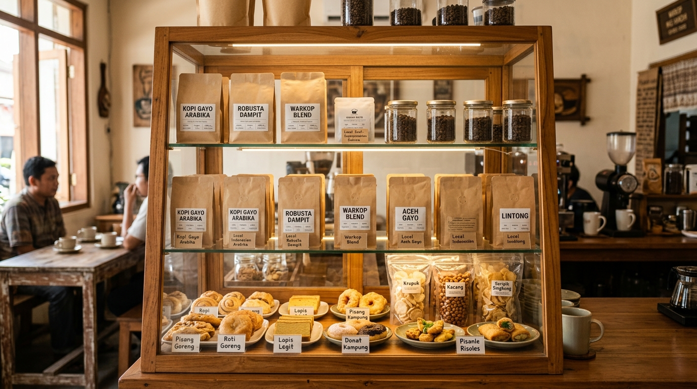

Lewati ke konten utama
Beranda
Tentang Kami
Produk
Galeri
Galeri Warkop Mas Hamzah
Galeri Warkop

Etalase produk membantu pelanggan mengenali pilihan kopi.
Proses seduh manual menjadi bagian dari cerita produk.
Nada Penanda Kedai
Nada uji singkat memastikan elemen audio dan kontrol browser dapat diperiksa.
Browser Anda tidak mendukung pemutar audio.